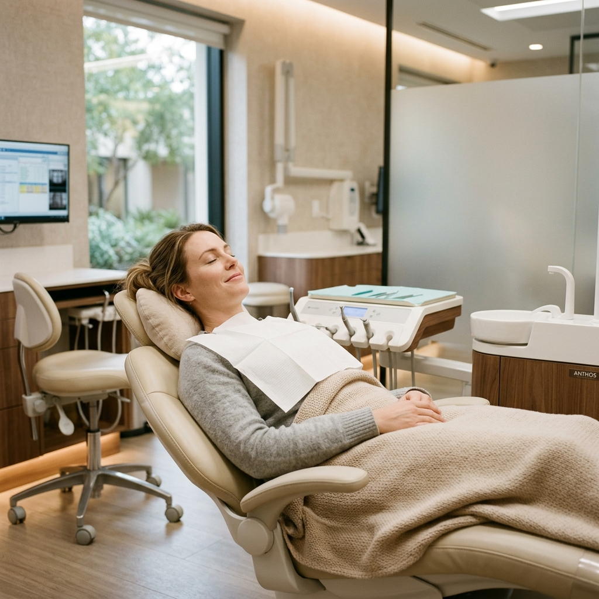
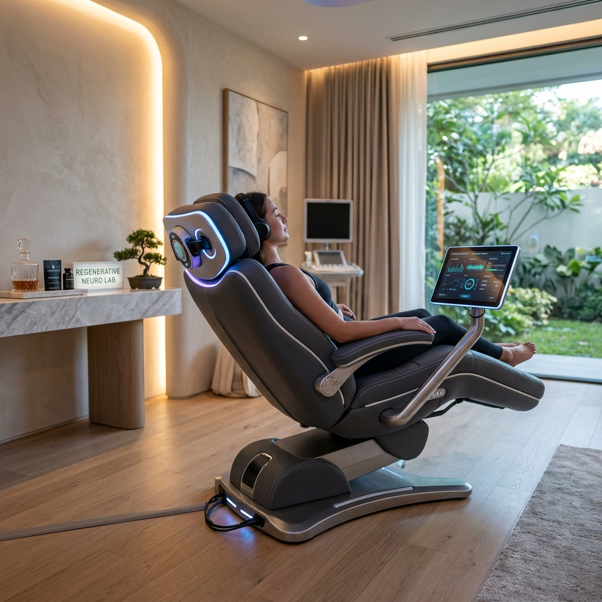

Biohacking e Conforto
Wellness clínico integrado ao tratamento
Estratégias integradas nos tratamentos dentários e estéticos, com o objetivo de apoiar o corpo e melhorar a experiência do paciente.
Estratégias integradas nos tratamentos dentários e estéticos, com o objetivo de apoiar o corpo e melhorar a experiência do paciente.
Procedimentos clínicos podem representar um desafio para o organismo. A integração de estratégias de wellness permite:
Tudo é feito de forma discreta, segura e integrada no próprio ato clínico.

A tecnologia Neurosonic utiliza vibrações sonoras de baixa frequência, estudadas cientificamente, para atuar sobre o sistema nervoso de forma não invasiva.
Na nossa clínica, esta tecnologia é integrada nos protocolos clínicos, o que contribui para uma maior estabilidade fisiológica, redução de stress e apoio à recuperação física e mental após procedimentos.
A utilização é sempre acompanhada e adaptada a cada situação clínica.

A integração de wellness e biohacking é realizada com total controlo clínico. Não implica sessões independentes e não substitui tratamentos médicos ou dentários.
Ao integrar estratégias de wellness clínico, a Clínica Luís Santos reforça o seu compromisso com uma medicina dentária e estética centrada na pessoa.
Conheça a nossa abordagem